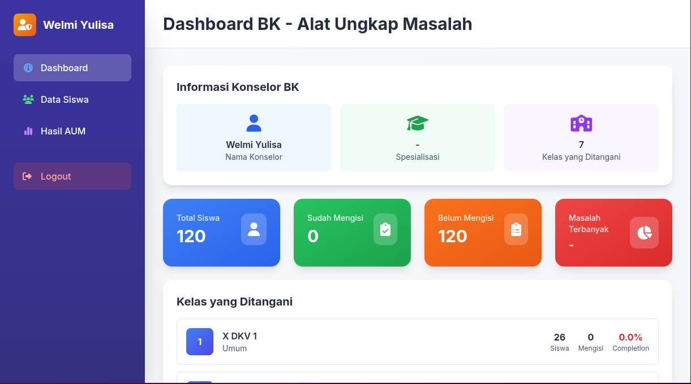
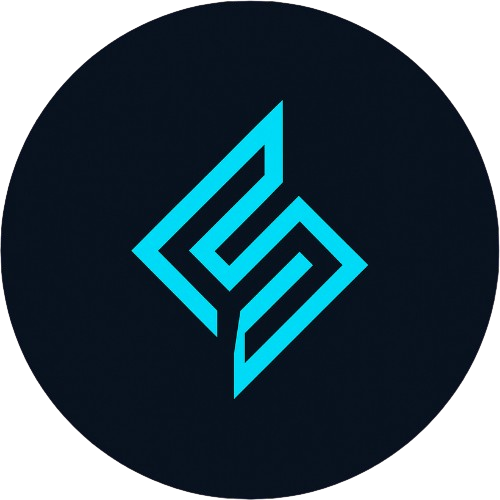

AUM (Alat Ungkap Masalah) adalah sebuah instrumen psikologis yang digunakan untuk mengidentifikasi dan mengungkap berbagai permasalahan yang dialami individu, baik dalam aspek pribadi, sosial, keluarga, pendidikan, maupun lainnya.

Fitur-fitur canggih yang dirancang untuk menyederhanakan alur kerja dan meningkatkan produktivitas Anda. Rasakan masa depan kolaborasi tim.
Rasakan kinerja yang sangat cepat dengan infrastruktur kami yang dioptimalkan dan teknologi mutakhir.
Keamanan tingkat bank dengan enkripsi menyeluruh, memastikan data Anda selalu terlindungi.
Dapatkan wawasan mendalam dengan analisis waktu nyata dan dasbor yang dapat disesuaikan.
Dengan Fitur Filterisasi Guru BK Hanya Dapat Melihat Data Anak Murid Yang Dididik, Mengutamakan Privasi Terhadap Hasil Tes Anak Murid
Akses ruang kerja Anda dari mana saja dengan aplikasi seluler asli dan desain responsif.
Terapkan secara global dengan infrastruktur kami di seluruh dunia, yang memastikan latensi rendah.

TEFA BCS Merupakan Tempat Pembelajaran Berbasis Industri,Yang Dimana Siswa Difokuskan Belajar Dengan Mengetahui Masalah-Masalah Yang Ada Di Dunia Nyata.
Berfokus Pada PBL(Project Based Learning), Yang Dimana Siswa/i Belajar Melalui Projek Nyata Sehingga Dapat Mengetahui Langsung Apa Yang Dunia Perlukan Untuk Digitalisasi.
Pelajari Lebih Lanjut →